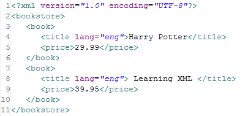
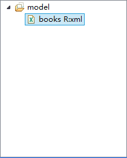
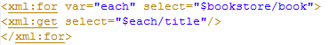
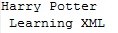
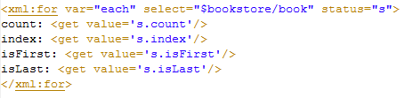
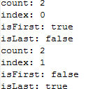
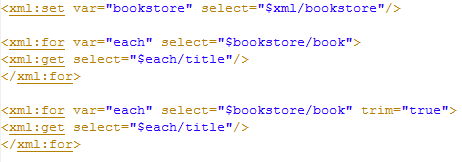
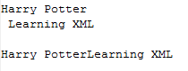
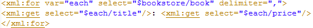
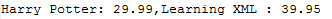

<xml:for>
循环遍历Xml节点
遍历子Xml节点，使用Xpath表达式得到需要遍历的节点。
select（必须） 使用Xpath表达式得到Xml循环的节点
var（必须） 存储集合的遍历对象
status（可选） 设置变量，存储循环信息 符号 描述 count 循环总次数 index 当前循环索引 isFirst 当前循环是否为头索引 isLast 当前循环是否为尾索引
trim（可选） 是否保留输出值的前后空白字符 属性 false:保留输出值的前后空白字符（默认） true:删除输出值的前后空格（包括换行符）
delimiter（可选） 循环输出之间的分隔符
select属性中，使用Xpath表达式得到被遍历的Xml节点，在var属性中，设置遍历的对象。
这是一个xml文件

我们将它添加到我们的模型后。

(添加Xml模型的方法请参考：转换xml模型)
在模板中，我们选择这个模型，以便我们在模板中能提示出对应的内容。
如果选的只是模型组，则xml标签需要指定relation
如果选的是模型，则xml标签不需要指定relation
关于Xml标签的使用方法请参考：xml标签
得到需要遍历的父节点bookstore，并设置为新变量。
$bookstore/book，得到名为book的所有节点集合，并设置遍历对象each，循环输出book的title值。

运行结果

符号 描述 count 循环总次数 index 当前循环索引 isFirst 当前循环是否为头索引 isLast 当前循环是否为尾索引
以下设置status变量s，输出它循环的信息。

结果

trim是判断是否保留输出值的前后空白字符，默认false，也就是说原样输出所有字符。
以下2个输出方式，一种默认trim="false",另一种trim="true"。

可以看出，第一种方式原样输出，包括前后的空格和换行符，另一种去除了空格和换行符。

delimiter循环输出之间的分隔符，如果指定了分隔符，则输出元素间只按分隔符分割，而不在按原来的格式。

运行结果
